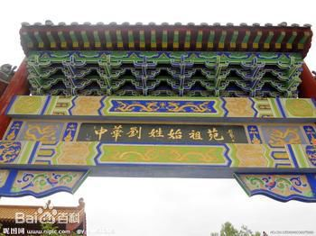

刘姓，最早一支刘姓源自尧的后裔刘累，故刘累为刘姓得姓始祖。刘姓望出江苏彭城。 [1]
至2013年有人口近7000万，占全国人口的5.34%，在王、李、张之后排第四位。刘姓建立了西汉、后汉、南汉等政权。
| 中文名 | 刘姓 | 郡 望 | 彭城郡、中山郡、长沙郡、南阳郡 | |||
| 外文名 | liu，lau | 堂 号 | 御龙堂、豢龙堂、沛国堂、中山堂 | |||
| 得姓始祖 | 刘累（御龙氏） | 主要分布 | 国内分布较广，海外韩国、日本等 | |||
| 历史人物 | 刘邦、刘彻、刘备、刘少奇等 |
据史记《汉书》、《通志・氏族略》和《中国姓氏》所载，刘姓的起源主要有三支：祁姓、姬姓、外族的改姓。  1、最早的一支来源于祁姓，是帝尧的后裔，形成于夏朝后期，出自今 河南鲁山。 祁姓之刘有同出一源的两支：一支直接出自刘累，形成于夏朝；一支出自刘累后裔士会，形成于春秋初期。 刘累生于夏朝后期，曾经跟着精通养龙技术的豢龙氏学过驯化龙的本领，为夏朝第十三帝孔甲驯养4条龙，因而被
孔甲赐姓为御龙氏 [3] 。刘累在为孔甲养龙时住在今河南偃师县南 [4] 。后来，由于饲养不善，死了一条雌龙，
刘累怕孔甲治罪，就偷偷地带着家眷南逃到鲁县（今河南鲁山县）躲了起来。刘累的子孙以刘累的名字为姓氏，就是
中国最早的刘姓。 [5] 2、源于姬姓的刘氏形成于春秋时期，系以邑为氏，出自今河南偃师。 [6] 3、外族的改姓 （1）赐姓：项羽的叔父项伯，因在鸿门宴对刘邦有救助之功，刘邦赐其家族姓刘。公元前202年，刘邦在洛阳即皇帝位后，接受戍卒 娄敬定都关中的建议，决定把国都迁到长安，并因此赐娄敬姓刘。 （2）西汉初年：匈奴族刘姓。当时，匈奴部族强盛，汉高祖刘邦采取和亲政策，把皇室宗女嫁给匈奴单于冒顿为妻。冒顿姓挛，但按照匈奴贵者皆从母姓的习俗，挛氏子孙皆姓刘。 （3）魏晋十六国时期：匈奴族的一支为争取中原人民的支持,自称是汉朝公主与匈奴单于的后裔，一直使用母方的姓氏故而姓刘。他们先后在今山西、陕西、内蒙地区建立了汉、前赵和夏三个政权,后定居河南。
史称“河南刘氏”。前赵的建立者刘渊即是匈奴贵族。 （4）北魏“勋臣八姓”之一有独孤氏，孝文帝于太和二十年（494年）自山西大同迁都洛阳后，于496年实行汉化改革，将鲜卑族的独孤氏改为刘氏。 （5）唐末五代时期，突厥别部沙陀族的一支也冒称是刘邦的后裔。五代十国中的后汉政权和北汉政权就是由沙陀刘氏建立的。
宋朝时期（公元960－1279年），刘姓大约有360万人，约占全国人口的4.7%，为宋朝第四大姓。在全国的分布主要集中于江西、河北、山东，这三省刘姓大约占刘姓总人口的39%；其次分布于湖南、河南、
浙江、福建和四川，这五省的刘姓又集中了31%。江西为刘姓第一大省，居住了刘姓总人口的17%,刘姓占江西省总人口的7.6%。全国形成了赣浙闽、冀豫鲁、川湘三大块刘姓人口聚集区。